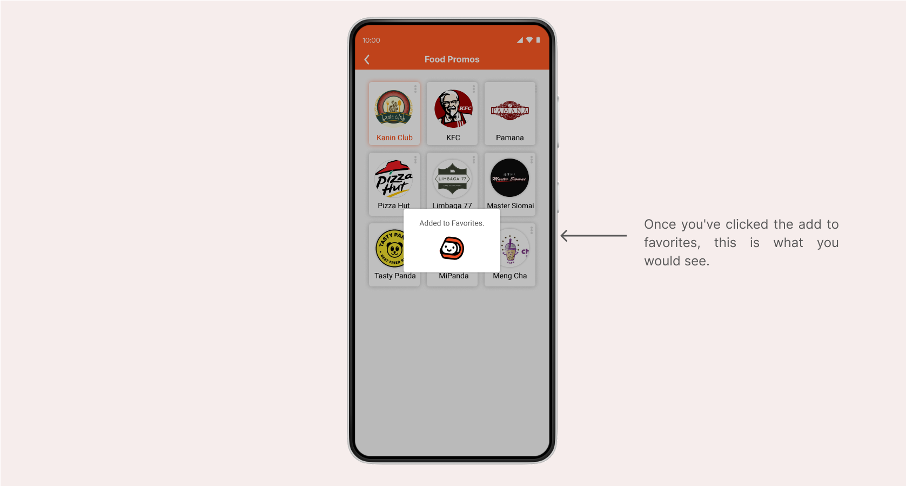
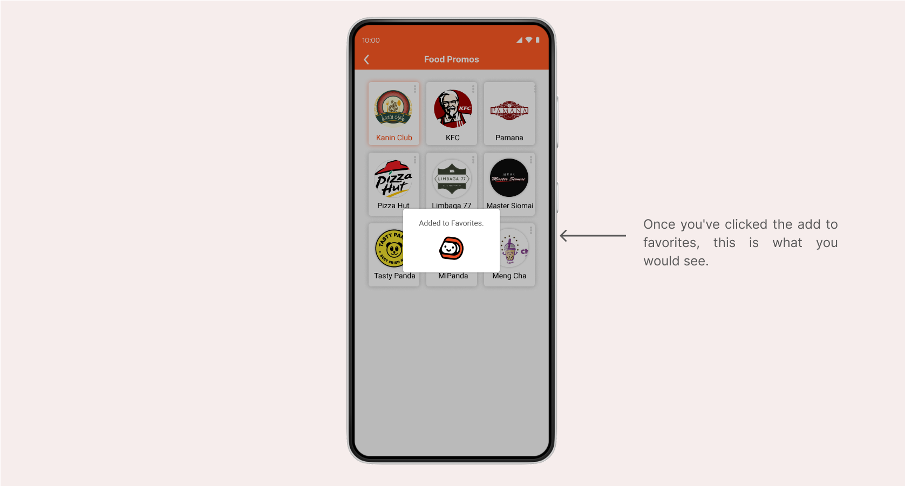
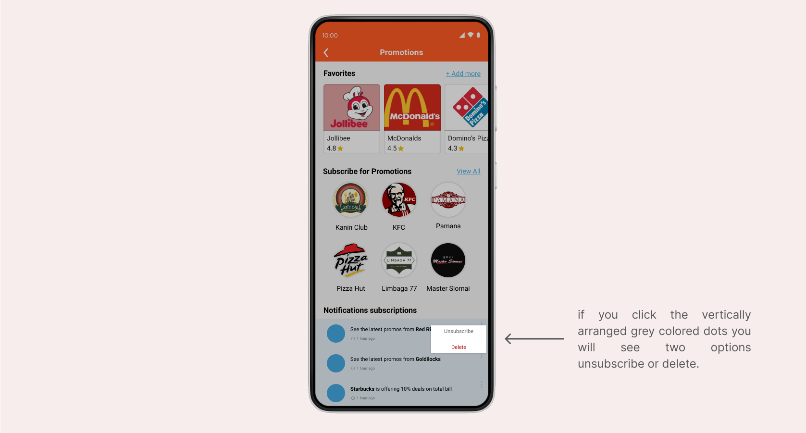
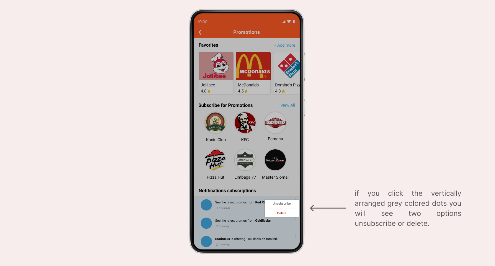
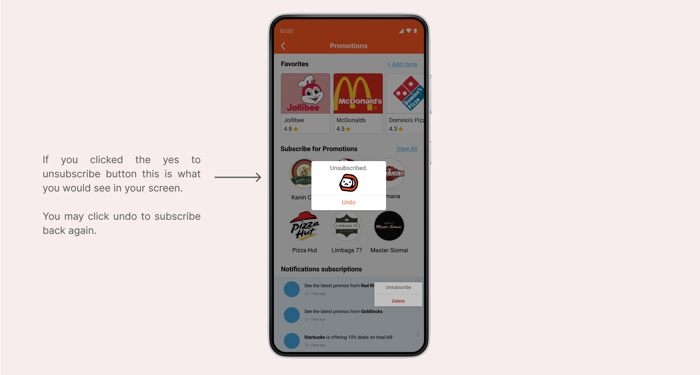
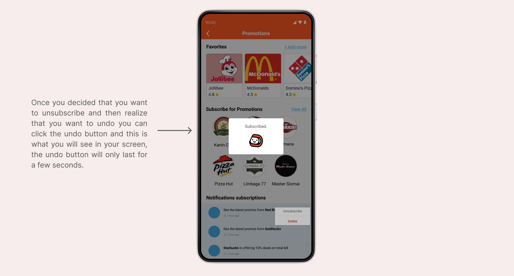
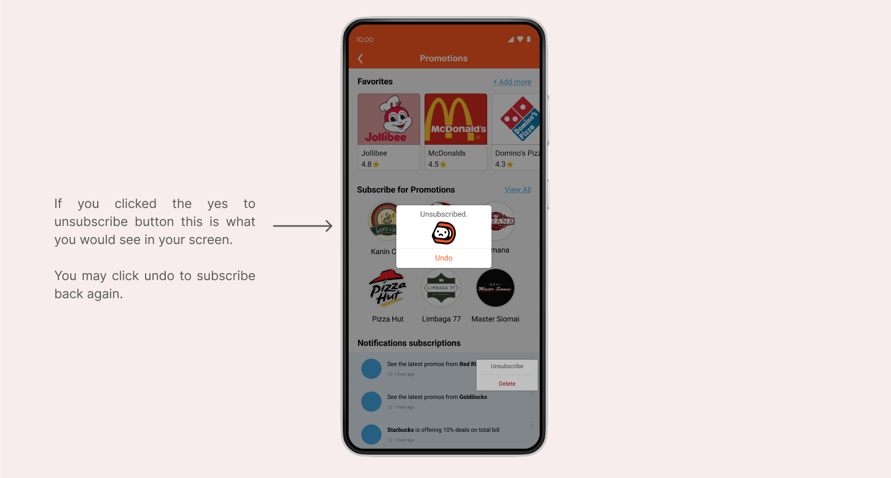
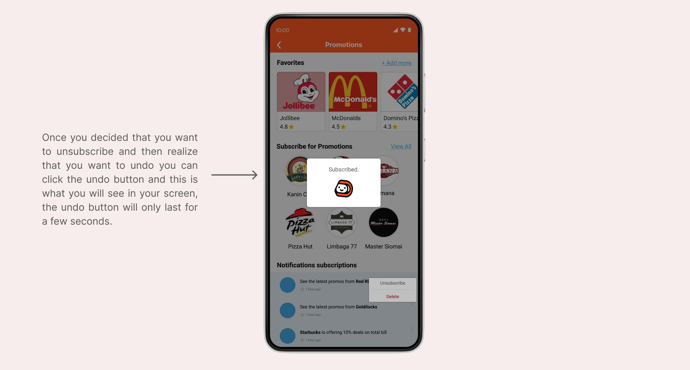
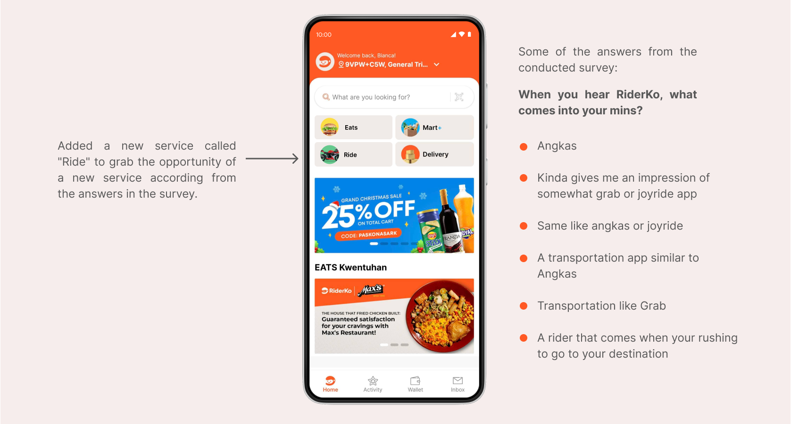
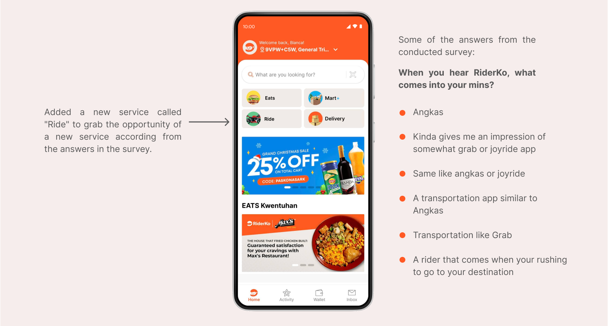

About
RiderKo is a 100% Filipino developed mobile application that offers on demand food and mart orders as well as door to door delivery services designed to empower its partners. The purpose of this case study competition is to create a business proposal for RiderKo to help stand out as a Filipino owned business. This case study is ranked 3rd place out of 11 teams.
Role
I joined as solo and was grouped with 3 random participants. Worked as a UI/UX Designer and Researcher
Tools Used


 

 

 




 
